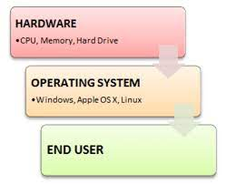

What is an Operating System
Links:
An Operating System (OS) is a software that acts as an interface between computer hardware components and the user.
Every computer system must have at least one operating system to run other programs. Applications like Browsers, MS Office, Notepad Games, etc., need some environment to run and perform its tasks.
The OS helps you to communicate with the computer without knowing how to speak the computer's language. It is not possible for the user to use any computer or mobile device without having an operating system.
